Autoprogettazione
Autoprogettazione is a radical, open-source furniture design project created by Italian designer Enzo Mari in 1974. Translated as "self-design" or "self-made", it consists of 19 minimalist, DIY furniture blueprints (tables, chairs, and beds) designed to be built by anyone using basic raw lumber, a hammer, and nails.
Philosophy behind the project
The project was Mari's response to the consumerist, capitalist culture of the 1960s and 70s. Instead of selling finished objects, he gave the designs away for free in the form of instructions, with the goal of empowering the user through the democratization of design. Mari saw Autoprogettazione as a way to encourage self-sufficiency.
This relates to Mari's communist philosophy, as the project explores reclaiming the means of production by eliminating profit incentive and allowing people to bypass companies, factories and retail settings.
Scroll down to view more photos.
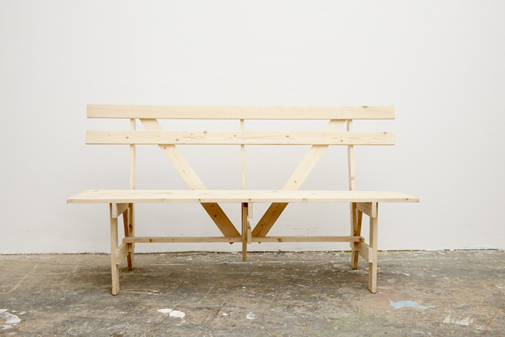
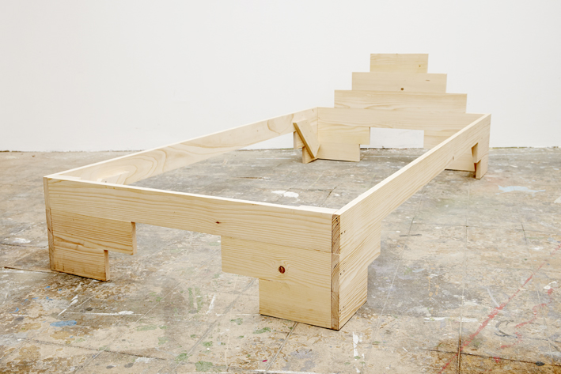
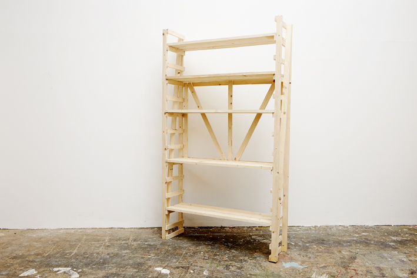
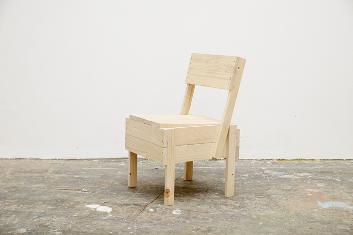
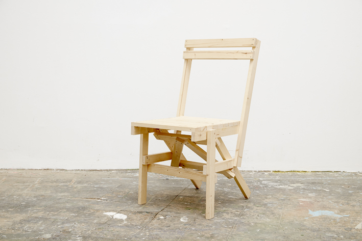
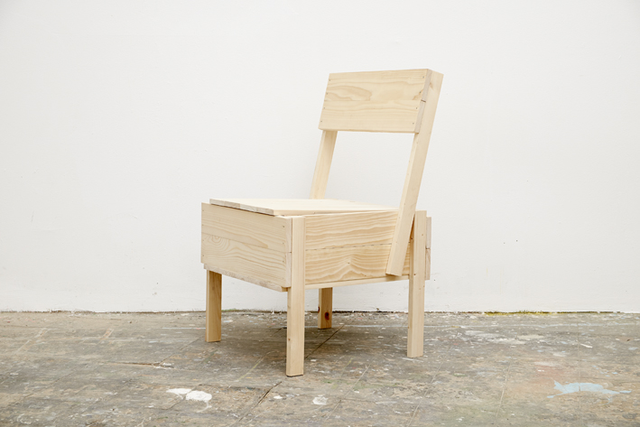
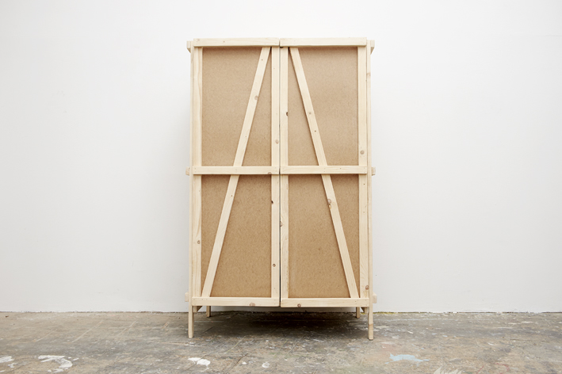
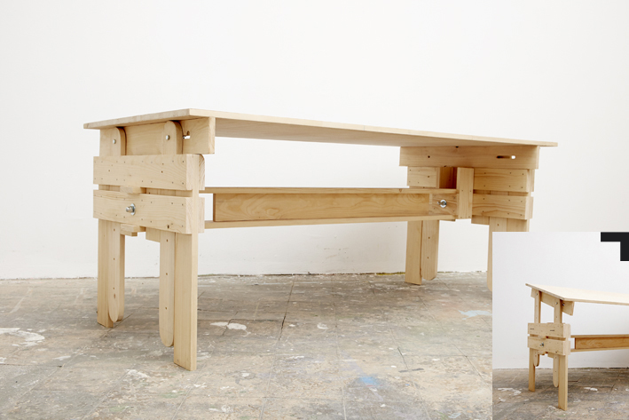
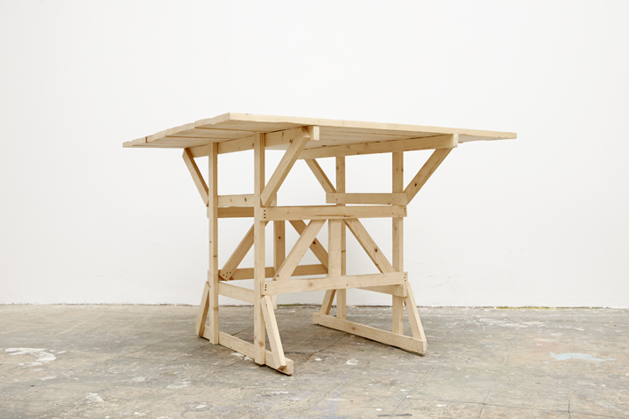
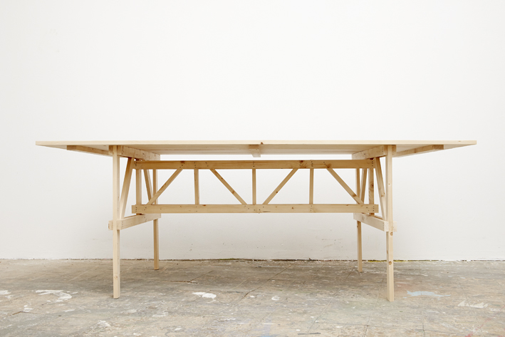
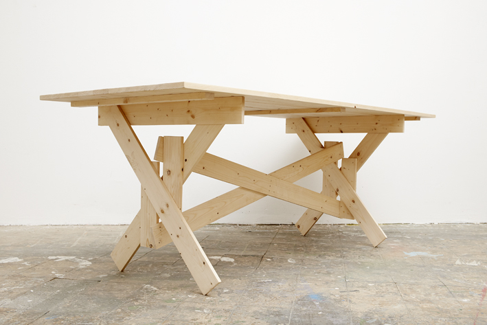
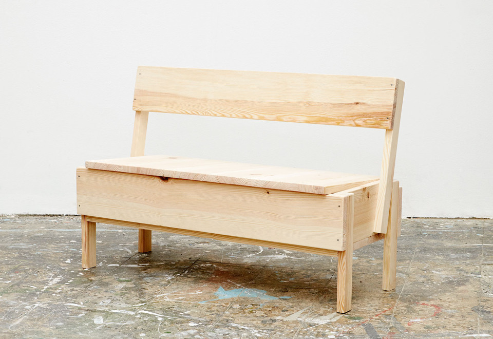